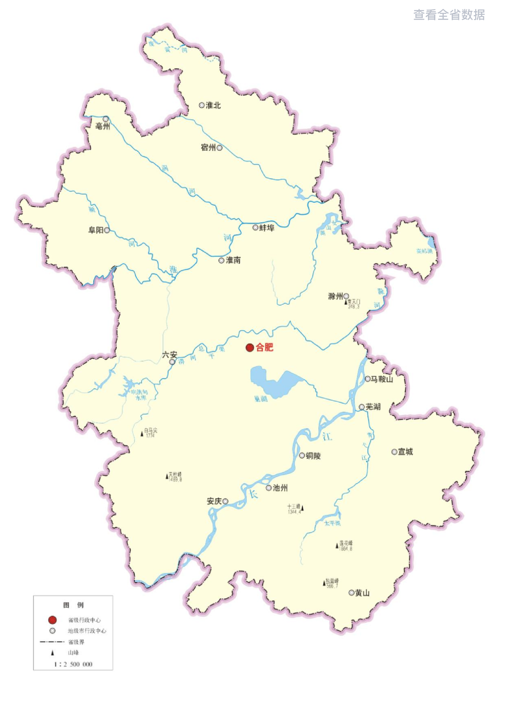

- 合肥市蜀山分局 42起
- 阜阳市交警支队 38起
- 芜湖市镜湖分局 31起
- 蚌埠市龙子湖分局 25起
- 六安市裕安分局 19起
- 张** (警号: 01**42) 8起
- 王** (警号: 03**11) 6起
- 李** (警号: 02**55) 5起
- 赵** (警号: 05**33) 4起
- 陈** (警号: 08**78) 4起
数字下钻详情
支持地市、区县、所队、个人、问题形式多维下钻
筛选条件
支持按时间范围、涉及地市、单位名称、业务类型、问题属性等维度组合查询；条件之间为“与”关系，可与下方自定义字段叠加。
督查业务数据库数据列表
预置查询模板
| 线索编号 | 单位名称 | 业务类型 | 问题属性 | 线索来源 | 涉及人员 | 风险等级 | 处置状态 | 发现时间 | 操作 |
|---|---|---|---|---|---|---|---|---|---|
| XJ202604170001 | 合肥市公安局 | 执法办案 | 执法规范 | 督察模型 | 张某（民警） | 高风险 | 核查中 | 2026-04-17 09:30 | |
| XJ202604170002 | 芜湖市公安局 | 行政管理 | 服务质效 | 12389热线 | 李某（辅警） | 中风险 | 已属实 | 2026-04-17 08:15 | |
| XJ202604170003 | 阜阳市公安局 | 队伍管理 | 队伍作风 | 视频巡查 | 王某（民警） | 低风险 | 已核销 | 2026-04-17 07:45 | |
| XJ202604160088 | 蚌埠市公安局龙子湖分局 | 执法办案 | 涉案财物 | 督察模型 | 刘某（民警） | 中风险 | 待反馈 | 2026-04-16 21:12 | |
| XJ202604160072 | 安庆市公安局交警支队 | 服务群众 | 服务质效 | 民意感知 | 陈某（辅警） | 低风险 | 核查中 | 2026-04-16 18:40 | |
| XJ202604160051 | 马鞍山市公安局花山分局 | 行政管理 | 纪律作风 | 信访投诉 | 周某（民警） | 高风险 | 已问责 | 2026-04-16 16:05 | |
| XJ202604150033 | 滁州市公安局琅琊分局 | 执法办案 | 执法规范 | 现场督察 | 吴某（民警） | 中风险 | 已属实 | 2026-04-15 14:22 | |
| XJ202604150019 | 六安市公安局裕安分局 | 队伍管理 | 制度执行 | 语音督察 | 郑某（辅警） | 低风险 | 待核查 | 2026-04-15 11:08 | |
| XJ202604140206 | 铜陵市公安局铜官分局 | 执法办案 | 涉案财物 | 督察模型 | 钱某（民警） | 高风险 | 核查中 | 2026-04-14 19:55 |
线索详情
汇聚数据标准化展示 · 支持核查与溯源（演示数据）
线索标识
- 线索编号
- —
- 线索来源
- —
- 业务类型
- —
- 问题属性
- —
- 风险等级
- —
- 处置状态
- —
关联工单
- 督察工单号
- —
- 关联模型/专项
- —
- 数据来源系统
- —
- 入库时间
- —
- 核查结果
- —
- 问责情况
- —
对象与时空信息
问题描述
—
办理流转记录
统计报表配置
分析维度（核心提取维度）
统计逻辑
展示方式
报表预览
选择配置后显示预览
设置报表查看范围
新增数据录入配置
批量导入基础数据
按督察模型监测、现场督察发现、12389热线举报、信访渠道反馈、视频巡查捕捉、语音督察识别、民意系统收集七个维度分类统计属实信息数量与占比。
| 来源渠道 | 属实数量 | 占比 |
|---|---|---|
| 督察模型监测 | 1320 | 23.9% |
| 现场督察发现 | 986 | 17.9% |
| 12389热线举报 | 842 | 15.2% |
| 信访渠道反馈 | 768 | 13.9% |
| 视频巡查捕捉 | 655 | 11.9% |
| 语音督察识别 | 522 | 9.5% |
| 民意系统收集 | 446 | 8.1% |
| 民警姓名 | 警号 | 单位 | 线索量 | 有效数 | 核查结果 | 办理状态 | 操作 |
|---|---|---|---|---|---|---|---|
| 张某某 | 012345 | 包河分局常青所 | 24 | 8 | 属实问责 | 整改中 | |
| 赵某 | 088212 | 高新分局蜀南庭威所 | 19 | 5 | 属实问责 | 已闭环 | |
| 王某 | 088213 | 高新分局高新所 | 22 | 7 | 属实问责 | 整改中 | |
| 李四 | 088214 | 高新分局蜀山所 | 18 | 4 | 属实问责 | 已闭环 | |
| 陈五 | 088215 | 高新分局滨湖所 | 25 | 9 | 属实问责 | 整改中 | |
| 刘六 | 088216 | 高新分局瑶海所 | 16 | 3 | 属实问责 | 已闭环 | |
| 张七 | 088217 | 高新分局庐阳所 | 28 | 10 | 属实问责 | 整改中 | |
| 杨八 | 088218 | 高新分局新站所 | 21 | 6 | 属实问责 | 已闭环 | |
| 吴九 | 088219 | 高新分局政务所 | 17 | 4 | 属实问责 | 整改中 | |
| 周十 | 088220 | 高新分局经开所 | 23 | 8 | 属实问责 | 已闭环 | |
| 孙十一 | 088221 | 高新分局巢湖所 | 20 | 5 | 属实问责 | 整改中 |
张某某 012345 属实问责 办理状态：整改中
包河分局常青所 累计线索量: 24 条 有效查实数: 8 条
| 单位 | 线索量 | 有效数 | 核查结果 | 办理状态 | 操作 |
|---|---|---|---|---|---|
| 包河分局常青所 | 142 条 | 12 条 | 高危 | 待整改 | |
| 蜀山分局井岗所 | 128 条 | 15 条 | 高危 | 整改中 | |
| 瑶海分局明光所 | 135 条 | 18 条 | 高危 | 待整改 | |
| 庐阳分局双岗所 | 118 条 | 10 条 | 高危 | 待整改 | |
| 高新分局蜀南所 | 125 条 | 14 条 | 高危 | 整改中 | |
| 经开分局繁昌所 | 112 条 | 9 条 | 高危 | 已整改 | |
| 新站分局政务所 | 138 条 | 16 条 | 高危 | 待整改 | |
| 滨湖分局巢湖所 | 122 条 | 11 条 | 高危 | 整改中 | |
| 肥东分局肥西所 | 130 条 | 13 条 | 高危 | 已整改 | |
| 肥西分局长丰所 | 115 条 | 8 条 | 高危 | 待整改 | |
| 长丰分局淮南所 | 140 条 | 17 条 | 高危 | 整改中 |
合肥市公安局包河分局常青派出所 高危单位
线索量: 142 条 有效数: 12 条 核查结果: 高危单位 办理状态: 待整改
| 警号 | 姓名 | 贡献查实数 | 主要问题领域 | 操作 |
|---|---|---|---|---|
| 012345 | 张某某 | 8 条 | 受立案超期、态度差 | |
| 088212 | 赵某 | 5 条 | 执法程序违规 | |
| 088213 | 王某 | 7 条 | 证据链不完整 | |
| 088214 | 李四 | 4 条 | 超时办案 | |
| 088215 | 陈五 | 6 条 | 违规使用装备 |
群众反映：该单位在处理一起纠纷时，存在推诿扯皮现象。
底层系统自动比对发现：案件 A34010352... 处警后 48 小时仍未进行受案操作。
群众投诉：在该所办理业务时，民警接待态度不冷不热，效率低下。
模型检测发现：扣押的 3 部手机在扣押后 72 小时内仍未进入财物管理系统。